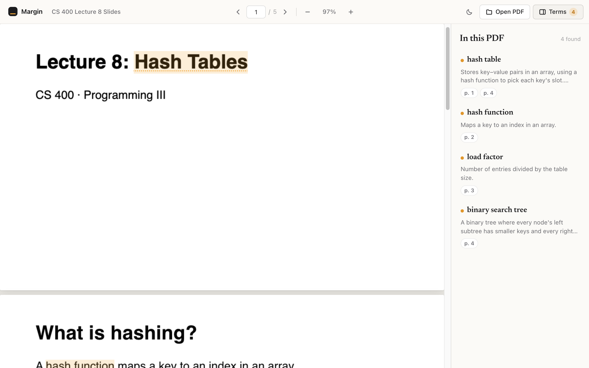

Free forever · No account · Your notes stay on your laptop
cs400 · week 9 notes
CS 400 · Lecture notes
Heaps and Priority Queues
Last week we used a binary search tree to keep keys in sorted order. This week we trade full ordering for speed: a priority queue only needs to hand back the most important item next.
The usual way to build one is with a heap. Because a heap is a complete binary tree, it fits in an array with no pointers, unlike a hash table with chaining.
heapCS 400
A complete tree where every node has a key more extreme than or equal to the key of its parent.
Week 9 · Heaps and Priority Queuesvia NIST
Every class has its own language. Margin helps you learn it where you read it, in slides, PDFs, course pages and notes, then hands it back to you as a glossary and a quiz.
How it works
01
Select a term.
Highlight any word on any page and press ⌥⇧S, click the pill, or right-click. Margin remembers where you found it, down to the PDF page.
02
Write it, or find it.
Write the definition in your own words, or let Margin find one that fits your class: textbook glossaries for psych, NIST for CS, science databases for bio and stats.
03
See it everywhere.
From then on the term is underlined on every page you read. Hover it and your definition is right there, with the course and where you first saw it.
canvas · week 9
The usual way to build a priority queue is with a heap. Inserting and removing both take logarithmic time.
Because a heap is a complete binary tree, it lives happily in an array.
Save to Margin
heap
DefinitionWrite my ownFind one
NIST · Algorithms and Data StructuresA complete tree where every node has a key more extreme than its parent's.
OpenStax · Introduction to Computer ScienceStores dynamically allocated data.
Wikipedia · Heap (data structure)A tree-based data structure that satisfies the heap property.
CS 400Save
heapCS 400
A complete tree where every node has a key more extreme than or equal to the key of its parent.
Week 9 notesvia NIST
Try it right here
No install needed to see it.
Hover an underlined term. Then click a dotted word to save it, and watch it light up everywhere.
cs400 · lecture notes
2 of 4 terms saved
Find one
Definitions that know your class.
Margin reads your course code, so “heap” in CS 400 means the data structure, and “elasticity” in ECON 101 isn't about rubber bands.
STAT 240Introductory Statistics · Statistics Ontology
BIO 152Biology 2e · Gene Ontology · MeSH
PSYCH 202Psychology 2e · MeSH
ECON 101Principles of Economics
0+
textbook definitions, built in and offline
0
free college textbooks from OpenStax
0
CS definitions from NIST
0
sign-ups, word limits, or paywalls
PDF viewer
Built for the PDFs your professors actually post.
Lecture slides open in Margin's own viewer, with your terms underlined, a list of every term in the file, and dark pages for late nights.

Every term in the file
A side panel lists the terms you've saved that appear in this PDF, with links to each page.
Back to the exact page
Every saved term remembers its source, so one click takes you back to slide 14.
Web or local
Works on PDFs from course sites and on the ones sitting in your Downloads folder.
Glossary and quiz
By Friday, your study guide already exists.
Every term lands in a glossary sorted by course. When it's time to review, Margin quizzes you, and the ones you miss come back first.
Export to CSV for Anki or Quizlet anytime.
Your notes never leave your laptop.
Everything is saved in your own browser. No account, no server, no tracking. The only time Margin goes online is when you ask it to find a definition, and then it sends just the term.